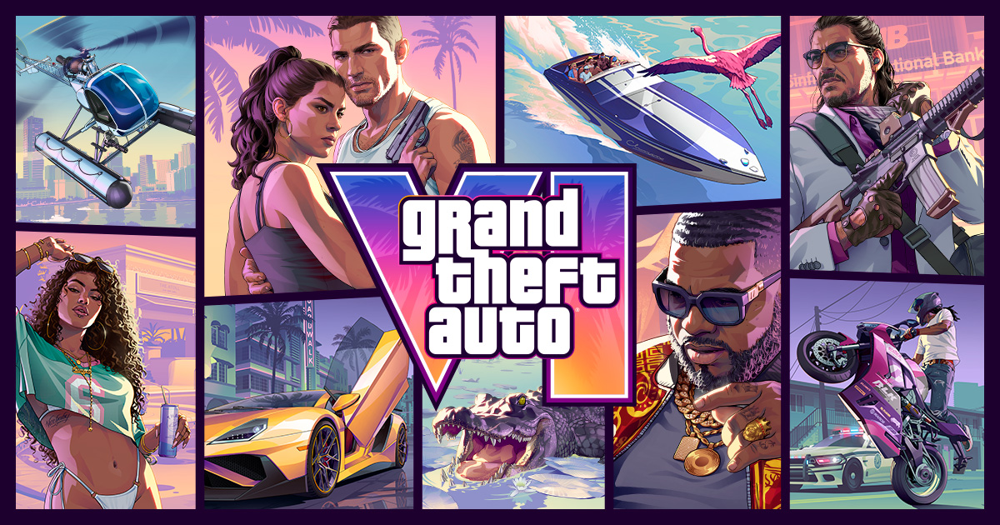

GTA6 하는법 싱글 전용? 오프라인 되나 구매 전 확인할 것
GTA6는 혼자 하는 게임이라는데, 그럼 인터넷 없이도 켜질까요? 출시를 17일 앞둔 11월 2일 기준으로 PS Store, Xbox 스토어, PlayStation 고객지원, 락스타게임즈 스토어에 올라온 한국어 안내를 같이 볼게요. 예약 특전과 가격은 지난 글에 있으니 여기서는 '시작할 때 뭐가 필요한지'만 볼게요.

락스타게임즈 스토어의 GTA VI 구매 페이지 대표 이미지예요.
이미지 출처: Rockstar Games, 락스타게임즈 스토어 GTA VI 페이지 · 네이버 본문엔 받아서 재업로드 권장
GTA6는 싱글 플레이 전용인가요
GTA6는 PS Store, Xbox 스토어, PlayStation 고객지원 세 곳 모두 '싱글 플레이 경험'으로 안내하고 있어요.
PS Store 한국 페이지에는 'Grand Theft Auto VI는 싱글 플레이 경험입니다'라고 적혀 있고, PlayStation 고객지원의 멀티플레이어가 있냐는 질문에도 '싱글 플레이어 경험'이라고 답해요. Xbox 스토어 기능 목록에도 '싱글 플레이어'가 올라 있고요. 세 곳이 같은 말을 하고 있어서 '혼자서 즐기는 게임'이라는 건 이미 공식 입장으로 보셔도 되는데요, 온라인 모드는 2026년 11월 2일 기준 공식 발표가 없어요.
GTA6 오프라인으로는 어디까지 되나요
PS Store 한국 페이지의 호환 표기는 '오프라인 플레이 전용'이지만, 같은 페이지에 인터넷 연결과 Rockstar Games 계정 등록이 필요한 기능이 있을 수 있다는 고지도 함께 있어요.
그래서 '싱글이니까 인터넷 없이 전부 된다'고 받아들이시면 위험해요. PS Store 호환 표기에서 이 글과 관련된 건 이 두 가지예요.
- 오프라인 플레이 전용
- 1명의 플레이어
스토어에 적힌 호환 표기 원문이에요.
법적 고지 쪽은 반대 방향이에요. 일부 게임 요소와 기능에 인터넷 연결, Rockstar Games 계정 등록(최소 연령 상이), 일회성 시리얼 코드, 추가 비용이 필요할 수 있다고 적혀 있고, Xbox 스토어에도 같은 문구가 있어요. 즉 '오프라인 전용'과 '인터넷이 필요할 수 있다'가 한 페이지에 같이 있는 셈이죠. 비행기나 이동 중에 하실 계획이라면, 출시 전에는 된다고도 안 된다고도 말할 수 없어요. 미리 내려받아 두는 것까지만 준비하시면 되는데요, 게임을 켜서 플레이하는 동안과 게임을 받거나 부가 기능을 쓰는 순간은 따로 생각하시는 게 좋아요.
11월 19일 출시 후에 게임 내 안내와 비행기 모드 실측이 나오면 이 글에 반영할게요.
GTA6 디지털과 코드 인 박스, 시작하려면 뭐가 필요한가요
GTA6는 디지털과 실물 둘 다 게임을 내려받아야 하고, 그러려면 인터넷 연결과 플랫폼 계정이 필요해요.
락스타게임즈 스토어 FAQ에 '게임을 다운로드하려면 인터넷 연결과 플랫폼 계정이 필요합니다'라고 나와 있어요. 실물이라도 상자에는 디스크가 없고 11월 12일 사전 다운로드를 지원하는 다운로드 코드만 들어 있어요. 그래서 '코드 인 박스'라고 부르는데요, 디스크 넣고 바로 켜는 방식은 아니에요.
| 구분 | 디지털 | 코드 인 박스(실물) |
|---|---|---|
| 시작 방법 | 구매한 스토어에서 내려받기 | 상자 속 다운로드 코드로 내려받기 |
| 디스크 | 해당 없음 | 상자에 포함되지 않음 |
| 내려받을 때 | 인터넷 연결 + 플랫폼 계정 | 인터넷 연결 + 플랫폼 계정 |
| 사전 다운로드 | 11월 12일 | 코드로 11월 12일 |
| 한국에서 쓸 수 있나 | 한국어 PS Store·Xbox 스토어 상품 페이지 있음 | 아직 알 수 없어요 (아래 참고) |
디스크가 없고 다운로드가 필요하다는 공식 문구예요.
고르는 기준은 이렇게 잡으면 돼요
· 인터넷으로 바로 받고 싶다면: 디지털이 맞아요. 배송을 기다릴 일이 없어서 일정이 단순해요.
· 상자와 코드를 소장하고 싶다면: 코드 인 박스가 맞아요. 다만 아래 지역 제한부터 보세요.
락스타게임즈 스토어 FAQ는 PlayStation 코드에 지역 제한이 있고 해당 국가에 등록된 PlayStation 계정에서만 작동한다고 안내해요. 나열된 지역은 북미, 영국, 유럽 17개국인데 한국은 없어요. 한국이 목록에 없다고 해서 '안 된다'는 건 아니고, 이 안내만으로는 아직 몰라요. 그래서 해외 배송 코드를 구매하실 계획이라면 지역 확인 없이 사는 순간 코드를 못 쓸 위험을 떠안게 돼요.
한국 판매처의 상품 안내와 출시 후 PS5·Xbox 게임 내 안내가 나오면 이 글에 반영할게요.
GTA6 구매 전 체크리스트, 어느 기기로 하나요
GTA6는 2026년 11월 19일 PS5와 PS5 Pro, Xbox Series X|S로 나오고, PS4에서는 할 수 없어요.
PlayStation 고객지원에 'PlayStation 4 콘솔에서는 이용할 수 없습니다'라고 적혀 있고, Xbox 스토어는 Series X|S에 최적화로 표기돼요. Xbox One 표기는 못 찾았고, PC도 2026년 11월 2일 기준 공식 발표가 없어요.
Xbox 스토어에 적힌 기능 표기 원문이에요.
그래서 사기 전에 이 다섯 가지를 먼저 보시면 돼요.
- 기기: PS5·PS5 Pro 또는 Xbox Series X|S
- 계정: 쓰는 플랫폼 계정과, 필요할 수 있는 Rockstar Games 계정(최소 연령 상이)
- 인터넷: 내려받을 때 필요해서 11월 12일 사전 다운로드 전에 준비(출시 11월 19일보다 일주일 빨라요)
- 저장공간: 설치 용량 공식 수치가 아직 없어서 본체 저장공간을 미리 비워 두기
- 코드 인 박스: 사기 전에 판매처에 지역 제한부터 문의
스토어 문구는 11월 12일과 19일을 전후해 바뀔 수 있어서, 결제 직전에 한 번 더 열어 보시는 게 좋아요. 11월 12일에 바로 내려받으실 계획이라면, 하루 전쯤 본체가 인터넷에 잘 연결되는지와 플랫폼 계정에 로그인이 되는지만 미리 확인해 두세요. 막상 그날 계정 문제로 막히면 사전 다운로드 시간만 아깝거든요.
자주 묻는 질문
Q. PS5 Pro나 리모트 플레이로도 할 수 있나요?
PS Store 호환 표기에 PS5 Pro 성능 향상과 리모트 플레이 지원이 올라 있어요. DualSense 무선 컨트롤러의 진동과 트리거 효과 지원도 같이 적혀 있어요.
Q. PS Plus나 Game Pass가 있어야 하나요?
스토어 페이지에는 싱글 플레이에 구독이 필수라고 적힌 곳이 아직 없었어요.
Q. 인게임 구매를 안 해도 끝까지 즐길 수 있나요?
PS Store 호환 표기가 '인게임 구매 선택 사항'이라 구매가 필수는 아니에요. 어떤 항목이 팔리는지는 출시 전이라 아직 몰라요.
Q. Rockstar Games 계정은 꼭 만들어야 하나요?
스토어 고지에는 '계정 등록이 필요할 수 있다'고만 적혀 있어요. 최소 연령이 다를 수 있다는 말도 붙어 있고요.
Q. 고지문에 나오는 '일회성 시리얼 코드'는 박스 속 다운로드 코드와 같은 건가요?
고지에 항목으로 올라 있을 뿐이라 박스 속 다운로드 코드와 같은 건지는 몰라요. 둘을 같은 걸로 읽지 않는 게 안전해요.
GTA6 하는법 정리
저라면 출시 전까지는 '싱글 플레이 경험, 오프라인 플레이 전용 표기'까지만 믿고, 오프라인 완전 동작은 출시 후 실측을 보고 판단하겠네요. 용량이나 오프라인 동작 같은 공식 수치가 나오면 다시 정리해서 들고 올게요. 출시일에 막힘없이 시작하도록 계정부터 챙겨 보세요 ㅎㅎ
✔ GTA6 같이 보기 좋은 내용
· GTA6 사전 다운로드 11월 12일부터, 디지털·실물 코드로 받는 법
· GTA6 예약 차이 스탠다드 얼티밋 에디션 비교, 예약 특전은 어디까지 공통일까?
· GTA6 출시일 11월 19일 확정, 한국 가격 89,800원 PC 출시 여부 PS5 에디션 정리
참고한 곳 (2026.11.02 기준)
· PS Store GTA VI 한국 페이지
· PlayStation 고객지원 GTA VI FAQ
· Xbox 스토어 GTA VI 한국 페이지
· 락스타게임즈 스토어 GTA VI 페이지